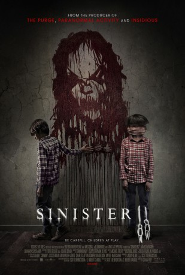

#5246 Sinister 2 - Achtung, spielende Kinder!
Alternativ: Sinister 2
 
 IMDB-Wertung: 5.3 / 10
IMDB-Wertung: 5.3 / 10  Metascore: 0
Metascore: 0 
Following the events from the first film, a different family; a mother and her 2 sons move into a rural house that's marked for death. When the deputy from the first film learns that this family is next in line to fall to the demon Bhughul, he races before time to stop it and save them from the same fate.
Jahr: 2015
Dauer: 97 Minuten
FSK: 16
Land: USA Studio: Focus FeaturesTonspuren: DTS - ,
Untertitel: Deutsch,
Auflösung: 1080p (1920x800) Größe: 6696 MB
Genre: Thriller, Horror, Mystery
Regisseur: Ciarán Foy
Drehbuch: Laurens van der Post
Soundtrack:
Darsteller:
 James Ransone als Ex-Deputy So & So
James Ransone als Ex-Deputy So & So Shannyn Sossamon als Courtney Collins
Shannyn Sossamon als Courtney Collins- Robert Daniel Sloan als Dylan Collins
- Dartanian Sloan als Zach Collins
- Lea Coco als Clint Collins
- Tate Ellington als Dr. Stomberg
 John Beasley als Father Rodriguez
John Beasley als Father Rodriguez- Lucas Jade Zumann als Milo
- Jaden Klein als Ted
- Nicholas King als Bughuul
- Michael B. Woods als The Creeper
- Howie Johnson als State Trooper Shermer
- Grace Holuby als Stomberg's Daughter
- Nicole Santini als Christmas Mother
 Ethan Hawke als Ellison Oswalt , credit only
Ethan Hawke als Ellison Oswalt , credit only Juliet Rylance als Tracy Oswalt , credit only
Juliet Rylance als Tracy Oswalt , credit only- Michael Hall D'Addario als Trevor , credit only
 Clare Foley als Ashley , credit only
Clare Foley als Ashley , credit only- Victoria Leigh als Stephanie , credit only
- Michele Sweeney Abrams als Dentist Wife , uncredited
- Nico Ford als Swamp Victim , uncredited
- Delphine Pontvieux als Electrocution Mom , uncredited
- Laila Haley als Emma
- Caden Marshall Fritz als Peter
- Olivia Rainey als Catherine
- Tory O. Davis als Security Guard
- John Francis Mountain als Christmas Father
- Stephen Varga als Christmas Son
- Skylar McClure als Christmas Daughter
- Tristan Jewel Abrams als Dentist Daughter , uncredited
- Robert Finlayson als Reverend, Milo's Father , uncredited
- Alex Ludwig als Young Boy , uncredited
- Paul Muttini als Electrocuted Father , uncredited
- Jose Santiago als Dentist Dad , uncredited
Datei: X:\2-Dilogie(N-Z)\Sinister\Sinister 2 - Achtung, spielende Kinder! (2015, FSK16, 1920x800).mkv seit 04.01.2017
Festplatte: HD Collection-2(A-Z)-3(A-M)
 Alle Filme aus Gruppe '2-Dilogie(N-Z)\Sinister'
Alle Filme aus Gruppe '2-Dilogie(N-Z)\Sinister'